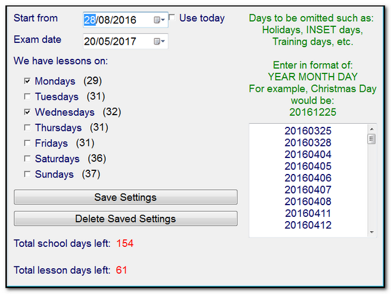

Calendar - exam countdown
Knowing how many lessons you have until the exam is essential for good planning and can also help to motivate students.
Enter the date of the exam, select the days where you have lessons and provide a list of days where students aren't in school.
The Teacher Toolkit will then calculate how many days are left, and how many lessons you have:

You can save your data, so you only need to enter the holiday dates once each year.
Delete Saved Settings removes any saved data, allowing you to replace the previous year's dates.